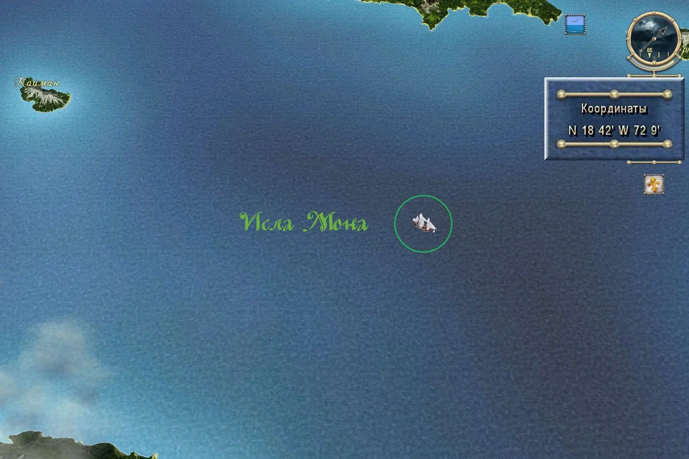
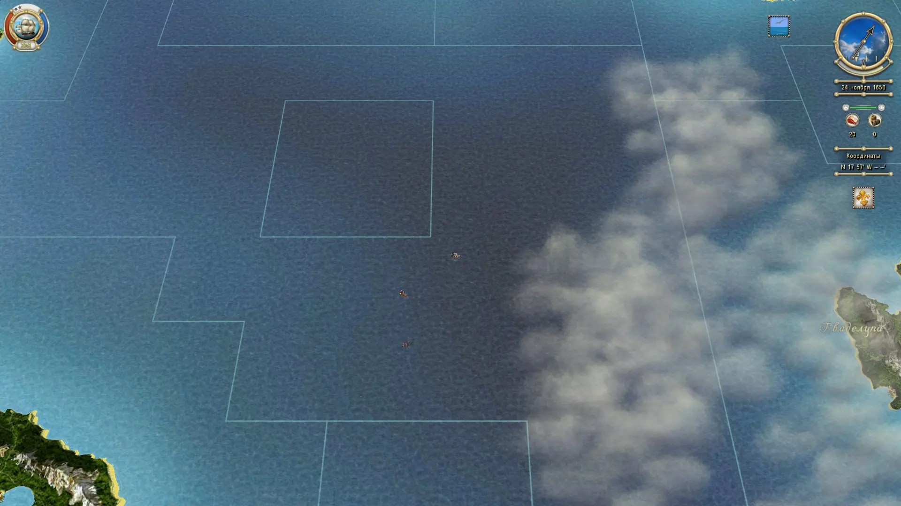
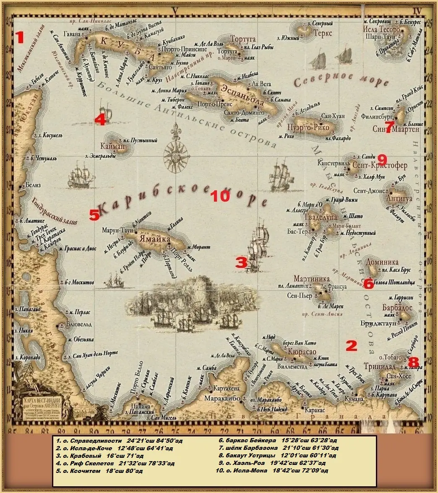

Исла Мона
скрытый остров · Исла Мона
← города и островаСкрытый остров — на глобальной карте не отмечен, попасть можно только по квесту или координатам.
Города
В скриптах: IslaMona
Точки входа
3
Локации
бухта Губернатора (`Shore75`)мыс Утопленника (`Shore76`)бухта Вьекес (`Shore77`)
Гроты и подземелья
| Название | Вход | Содержимое | Опасности |
|---|---|---|---|
| IslaMona_Cave / IslaMona_WaterCave | вход с джунглей острова; WaterCave — тип underwater (cavernLow2) | — | затопленная часть требует нырять |
Карты



- Точек входа с моря: 3 (`islands_init.c:2574`).
- Скрытый остров DLC 3 «Под чёрным флагом» (`islands_init.c:2596`, метка `Shore76` — мыс Утопленника). Тайная база: 18°42′ с.ш. / 72°09′ з.д.
- Секции `Trade` у острова нет — лавка нейтральная, все товары типа `normal`.